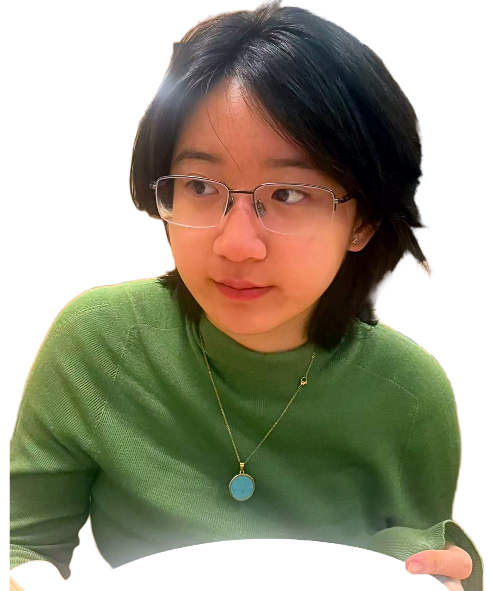
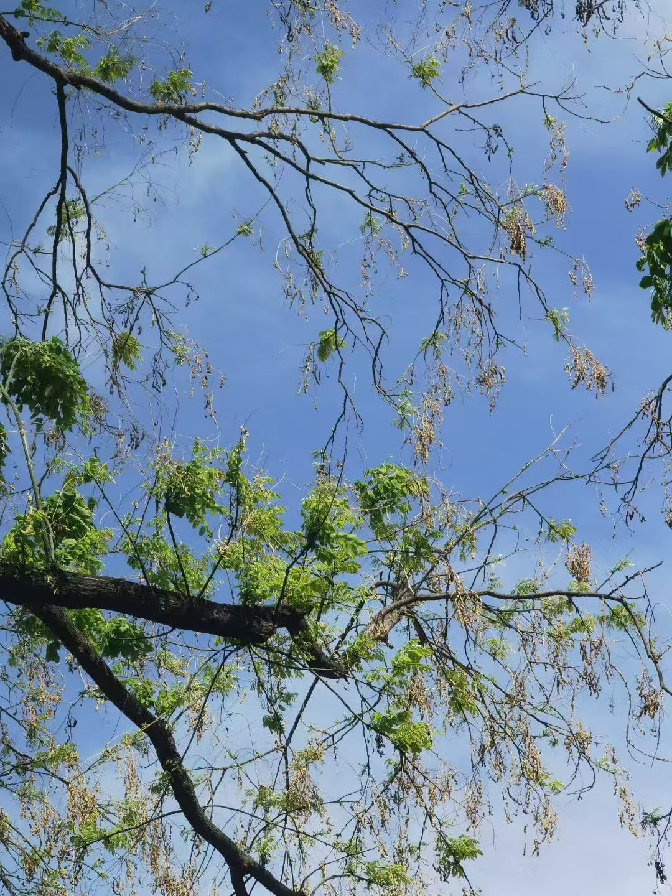

About [→ download Ziwei Lin' CV here ←]
Ziwei Lin ("zee-way") is a documentary filmmaker and video-journalist based in Williamstown, Massachusetts.
She is an enthusiastic and devoted practitioner of anthropological fieldwork, and her work centers on marginalized communities navigating social and political justice, as well as experiences going through cultural and identity shifts.
From 2020 to 2023, she conducted three years of anthropological fieldwork and oral-history collection across 15 villages in the borderlands of Yunnan China, Myanmar, and Laos, resulting in an ethnographic trilogy: "The Last Hunt" (2022), "Rite of Passage" (2022), and "Tree of Bee Spirit" (2023).
She directed and led the production of this trilogy, documenting the Wa and Blang peoples as they contend with the long aftermath of political upheaval, assimilation, and the fading of centuries-old traditions. The trilogy has screened at the Indie Short Fest, Los Angeles, among other festivals. (→ read more about Blang people ←) (→ read more about Wa people ←)


Her current project features a 40-minute documentary, "Voices of Tallevast: Eulogy, Elegy, or A Small Town Fighting for Justice" (2026), on environmental racism in Tallevast, a small, predominantly Black community in Southwest Florida that endured decades of industrial contamination. The film examines how an exceptionally close, vibrant, and faith-based community suffered from schism, paranoia, and displacement after fighting for environmental justice. The documentary screened at the Earth Week Art and Research Exhibit at Mount Holyoke College in April, 2026. (→ read more about Tallevast ←)
Alongside her filmmaking, Ziwei crafts compelling storytelling through multimedia means. In April 2026, she led the curation of "One Battle After Another: Living Beyond Disaster in Tallevast" (2026) at Wilde Gallery, Williamstown, an exhibition displaying a mix of photographs, archival newspaper clipping, interview footage, and even soil samples, calling out the discrimination and injustice facing the community over 25 years.
She also led the curation, installation, artwork-sourcing, and fundraising of "Loss and Hope" (2023), a two-week-long art exhibition at LiSpace Gallery, Beijing, in response to the Turkey-Syria Earthquakes of February 6, 2023 and the Sichuan Earthquake of May 12, 2008. Drawing together artists of diverse ages and backgrounds, the exhibition explored how natural catastrophe shape collective memory, cultural expression, and humanity's evolving relationship with the natural world.
Ziwei believes that positive changes happen when empathy outgrows apathy. She has had some of the most important conversations and revelations in life sitting before her interviewees, and she is prepared to work to build more spaces as such.
Ziwei is currently studying Comparative literature and French at Williams College, and serves on the board of directors of Purple Valley Productions, William's student-run filmmaking club. Her narrative works include "Flightless Birds (2025)", "Dear Mother" (2025), "Master and Margarita" (2025), and ongoing production "The Double Date"(2026).
List of Screenings:
• Eulogy, Elegy, or A Small Town Fighting for Justice (2026) - Earth Week Art and Research Exhibit @ Mount Holyoke College
• Flightless Birds (2025) - Queens World Film Festival @ NYC
• The Last Hunter (2022) -
• Indie Short Fest @ LA, Los Angeles International Film Festival, Feb 2022. Won: Best Documentary Short, Best Director, Best Editing, Best Music.
• The Discover Film Awards @ London: Shortlisted (42/5000+), Best Foreign Documentary.
• Lighthouse International Film Festival @ Long Beach, NJ - Screened & High School Student Films Award. (the only winner)
Ziwei grew up in Beijing, China. While not working, she likes to write, catch screenings at Metrograph, take pictures of trees, and hang out with her cat.
